16-825 · Learning for 3D Vision
Assignment 3: Volume Rendering, NeRF, and 3D Gaussian Splatting
Part A · Neural Volume Rendering
1. Differentiable Volume Rendering
1.3 Ray Sampling


1.4 Point Sampling
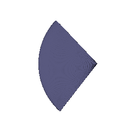
1.5 Volume Rendering

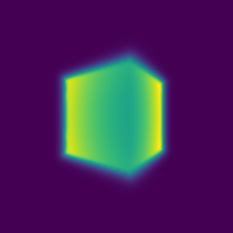
2. Optimizing a Basic Implicit Volume
2.2 Loss and Training
| Parameter | x | y | z |
|---|---|---|---|
| Box center | 0.25 | 0.25 | 0.00 |
| Side lengths | 2.01 | 1.50 | 1.50 |
Rounded to the nearest 0.01.
2.3 Visualization
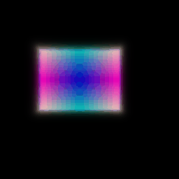
3. Optimizing a Neural Radiance Field (NeRF)
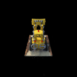
4. NeRF Extras
4.1 View Dependence
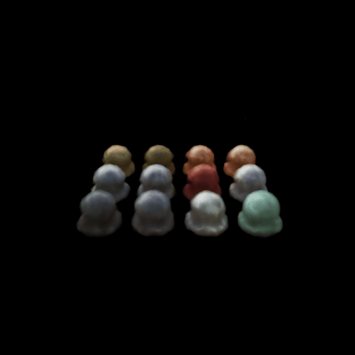
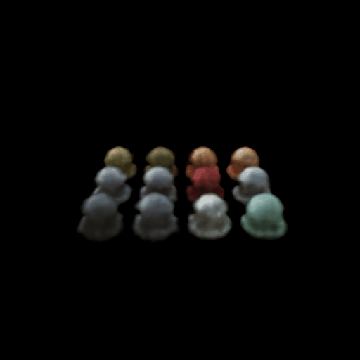
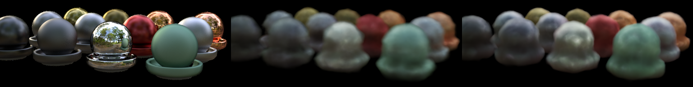
| Model | Train PSNR | Test PSNR | Train − test |
|---|---|---|---|
| Without view dependence | 23.38 | 23.10 | 0.28 |
| With view dependence | 24.07 | 23.53 | 0.54 |
nerf_materials_512.yaml, 512×512. PSNR (dB) over 40 training and 40 test views.
View dependence vs. generalization
The encoded ray direction is concatenated to the position feature before the color head; density depends on position only.
View dependence adds specular highlights on the glossy spheres and raises test PSNR by 0.43 dB, but training PSNR rises more (0.69 dB), so the train–test gap grows from 0.28 to 0.54 dB. The extra freedom lets the network explain inconsistencies between training views with view-dependent color instead of better geometry, which overfits the training cameras. A low-frequency direction encoding and a small color head limit this.
4.2 Coarse/Fine Sampling
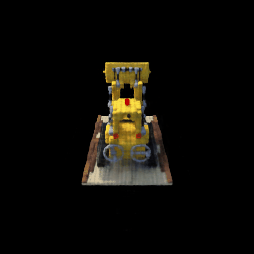
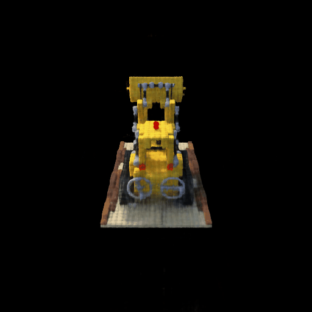
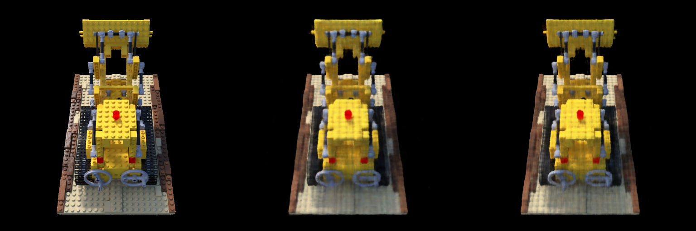
| Without coarse/fine | With coarse/fine | |
|---|---|---|
| Network evaluations per ray | 128 | 64 coarse + 192 fine |
| Parameters | 107k | 215k |
| Test PSNR (dB) | 24.70 | 25.29 |
| Training step (ms) | 9.7 | 17.6 |
| Training time (min) | 14.4 | 24.9 |
| Render one 512×512 image (s) | 0.91 | 1.84 |
Lego, 512×512, 250 epochs, 10 position-encoding frequencies. PSNR over 20 test views; times on one RTX 4090.
Speed vs. quality
The coarse network renders 64 stratified samples; its weights form a pdf along the ray, from which 128 more depths are sampled, and the fine network renders all 192. The loss is coarse MSE + fine MSE.
Quality: test PSNR +0.59 dB and sharper edges, since the fine samples concentrate near surfaces. You can see finer lego details and sharper shadows in the "with coarse/fine" test image.
Speed: twice the network evaluations per ray and two networks, so rendering is 2.0× and training 1.7× slower.
4.3 VolSDF
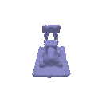
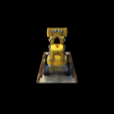
python -m volume_rendering_main --config-name=volsdf_surface renderer.alpha=20
What \(\alpha\) and \(\beta\) do
\(\sigma = \alpha\,\Psi_\beta(-d)\), where \(\Psi_\beta\) is the Laplace CDF. \(\alpha\) is the density inside the object (\(\sigma \to \alpha\) for \(d \ll 0\)). \(\beta\) controls how sharply the density rises across the surface: \(\sigma = \alpha/2\) at \(d = 0\) and ramps over about \(\pm 3\beta\). Small \(\beta\) approaches a hard surface; large \(\beta\) gives a fuzzy shell.
Questions
How does high \(\beta\) bias your learned SDF? What about low \(\beta\)?
High \(\beta\) spreads density over a wide band, so a smooth SDF whose zero level set is off the true surface can still match the images; thin parts vanish (\(\beta = 0.2\) loses the loader arms). Low \(\beta\) ties the zero level set to the visible surface, biasing the SDF toward sharp surfaces.
Would an SDF be easier to train with volume rendering and low \(\beta\) or high \(\beta\)? Why?
High \(\beta\): many samples fall in the wide band, so even a wrong SDF gets smooth, non-zero gradients. With low \(\beta\) only samples within a few \(\beta\) of the surface get gradients, and rays can step over it.
Would you be more likely to learn an accurate surface with high \(\beta\) or low \(\beta\)? Why?
Low \(\beta\), if the sampling can resolve it: the rendered surface coincides with the zero level set, so fitting the images places it accurately. High \(\beta\) allows a blurry or offset surface.
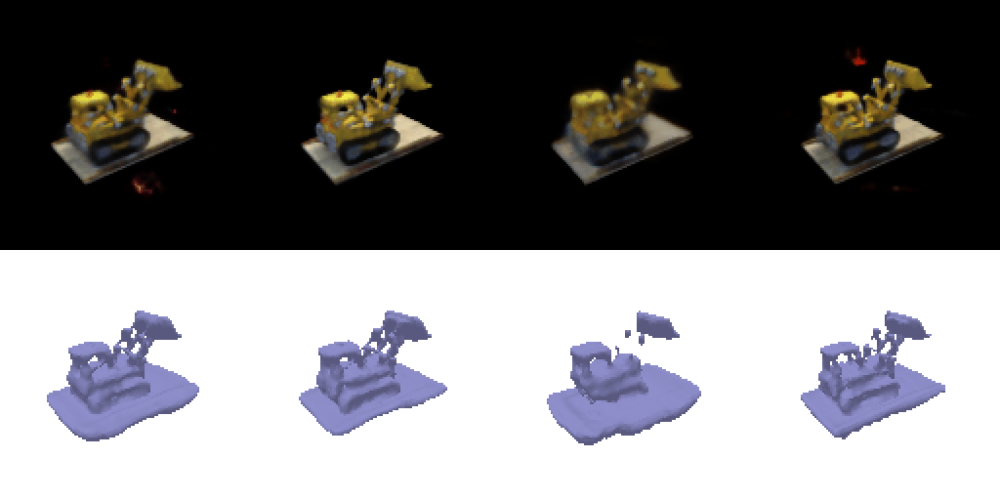
| Run | \(\alpha\) | \(\beta\) | Test PSNR | Mesh pieces (% of faces in largest piece) |
|---|---|---|---|---|
| Default, no sphere init | 10 | 0.05 | 21.71 | 2,618 (81%) |
| Default | 10 | 0.05 | 21.28 | 1 (100%) |
| Low \(\beta\) | 10 | 0.01 | 21.54 | 3 (99.7%) |
| High \(\beta\) | 10 | 0.2 | 20.26 | 4 (90.5%) |
| Chosen | 20 | 0.05 | 22.08 | 4 (99.7%) |
Test PSNR (dB) over 20 views. Mesh pieces: connected components of the extracted mesh.
Chosen settings
Sphere initialization (\(d = \text{MLP}(\mathbf{x}) + \lVert\mathbf{x}\rVert - 1\)): without it all of space starts inside the object, so unseen regions become spurious surfaces (2,618 mesh pieces).
Low \(\beta\) (0.05) keeps the thin parts that high \(\beta\) (0.2) loses.
\(\alpha = 20\) (\(= 1/\beta\), as in VolSDF) makes rays opaque right at the surface and gives the best PSNR.
Part B · 3D Gaussian Splatting
5. 3D Gaussian Rasterization
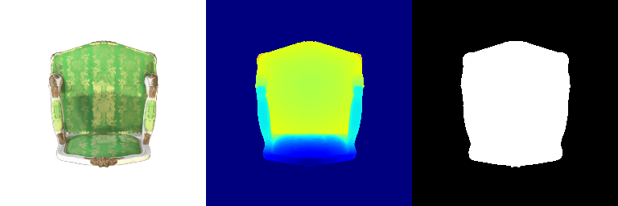
python render.py6. Training 3D Gaussian Representations
| Parameter | Learning rate |
|---|---|
| Means | 0.001 |
| Scales | 0.005 |
| Colours | 0.0025 |
| Opacities | 0.05 |
Iterations: 1,000 · PSNR: 30.15 · SSIM: 0.944
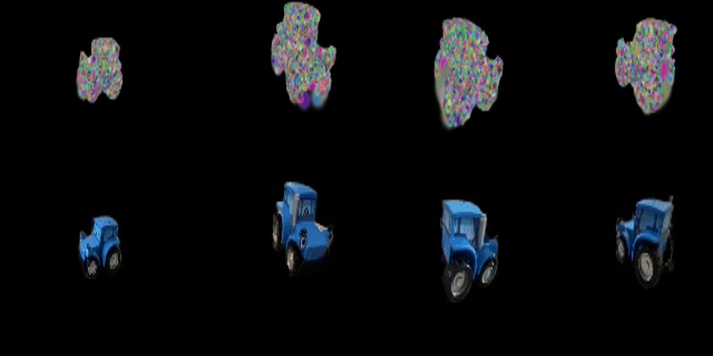
python train.py7. Extensions
7.1 Rendering Using Spherical Harmonics
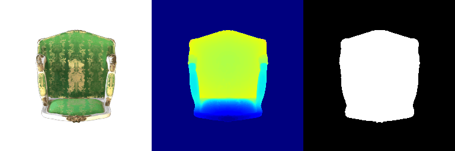
Comparison 1 · view 15
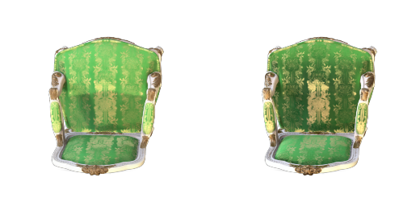
Differences
With spherical harmonics the fabric is darker and more saturated, and the gold brocade in the center shows a bright metallic highlight. Without them the backrest is a flat, view-averaged green.
Comparison 2 · view 3
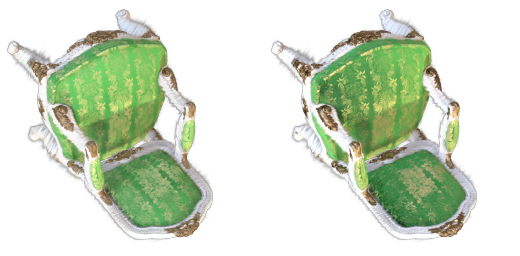
Differences
From above, the seat shows light and dark variation and the white frame gains shading; without spherical harmonics the chair looks evenly lit and flat. Depth and silhouette are unchanged.
7.2 Training On a Harder Scene
| Parameter | Learning rate |
|---|---|
| Means | 0.005, decayed exponentially to 0.00005 |
| Scales | 0.005 |
| Colours | 0.0025 |
| Opacities | 0.05 |
| Quaternions | 0.001 |
Iterations: 3,000 (baseline: 1,000)
| Method | PSNR | SSIM |
|---|---|---|
| Baseline (Q6 setup) | 18.61 | 0.692 |
| Improved | 23.40 | 0.854 |
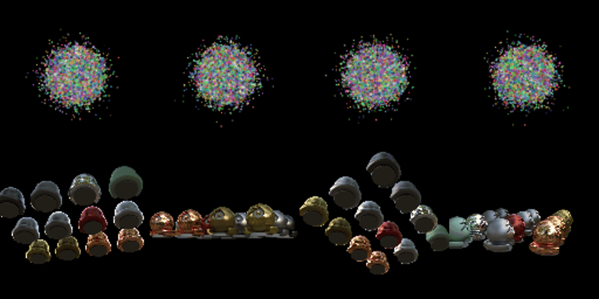
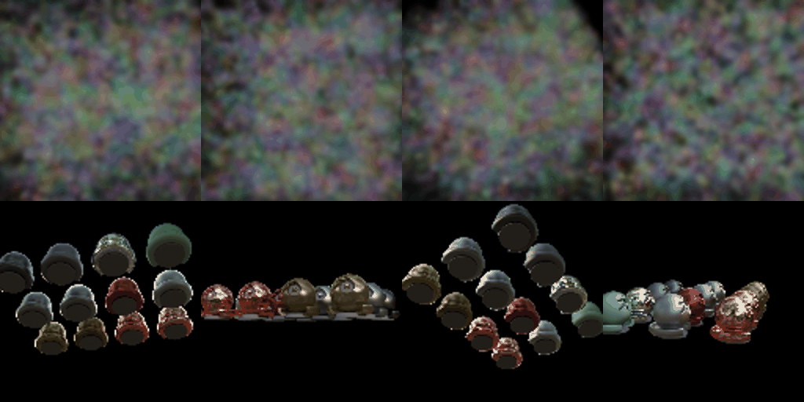
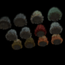
python train_harder_scene.py (baseline:
--baseline)Modifications
- Initialization: the means are spread uniformly over the view (±1.3) instead of a ball of radius about 0.5 at the origin, so Gaussians reach the spheres at the edges. They start mostly transparent (opacity 0.1) and small (half the spacing to their neighbours); with near-opaque, larger Gaussians the spread initialization covered the image in fog and failed. This is the main gain.
- Anisotropic Gaussians: scales per axis and trainable rotations.
- Longer training with a means learning-rate schedule: 3,000 iterations, with the means lr decaying from 0.005 to 0.00005 so the Gaussians first move far, then settle.
The loss (L1) and the other learning rates are the same as Q6.